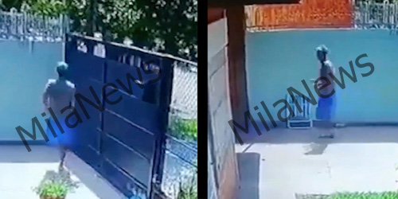

Demián "Resortín" Pogonza es un habitante de Villa Fiorito que atemorizó a su pueblo robando con una sola pierna. Este sujeto hurtó pertenencias de varias viviendas como casas kioscos y otros locales. "Resortín" se hizo famoso por su modus operandi de robar saltando en una sola pierna y tener éxito en ello.
El día 23 de mayo del año 2021, "Resortín" robó una vivienda en Villa Fiorito a las 11:35 p. m. Y permaneció allí durante 10 minutos. Deambuló durante este periodo y robó un motor a gas y unas zapatillas "Nike" antes de fugarse de la escena del crimen.
La víctima de este hurto formuló una denuncia en la comisaría N°2 de Berazategui y se comenzó una investigación policial sobre este sujeto.
Gracias a las cámaras de vigilancia se pudo registrar a Demián Pogonza y arrestarlo a las pocas horas.
En la madrugada del 9 de julio del 2022, "Resortín" hurtó un kiosco mientras el trabajador dormía. Este suceso se llevó a cabo en Villa Tesei a las 12:35 a. m.
El trabajador estaba durmiendo en su horario laboral con las rejas cerradas. Demián gracias a su ausencia de una pierna pudo deslizarse hacia adentro con gran flexibilidad. Tras esto, el ladrón robó un dispositivo celular y efectivo antes de huir de la escena.
Fuente: Clarín
Según una nota que se le hizo a Demián en el canal "Tv Libre" le "gusta robar por placer".
Demián Pogonza actualmente está encarcelado en Caseros tras su último robo.
Todo contenido escrito en este artículo es humor y debe ser tomado como tal. La mayoría de este texto es falso y está generado por IA. Derechos reservados para MilaNews.